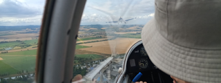
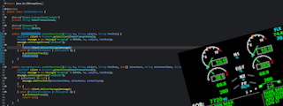
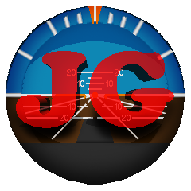
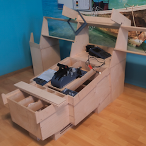
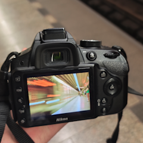

PORTFOLIO · 2026
Kristián
Píštěk
Aviation · Software Development · Photography
Pilot in training, aircraft mecahnic high school student, software developer and photographer. This is my portfolio where I share my work and projects.
SCROLL TO EXPLOREWhat I do

Aviation
Currently in glider pilot licence training and working towards professional commerical flying. Studying at a flight mechanics high school with a focus on avionics.

Software
3+ years of experience in Java with a focus on web development, flight simulation software and game plugin development.
Photography
Plane spotting, railways, portraits, landscapes and everyday photography. A growing collection of my photos.
Selected work

Just Gauges
A small software business focused on flight simulation gauges and tools for hardware flight decks.

A320 Home Cockpit
A long-term home cockpit project combining custom hardware, software and aviation knowledge.

Photography
A growing collection of aviation, railway and everyday photography.
A little more about me
I am a 16-year-old aviation enthusiast, software developer and photographer. I am currently in glider pilot licence training and studying at a flight mechanics high school with a focus on avionics. I have been programming for over 3 years, mainly in Java, and I have a growing collection of my photography work.
More about me →